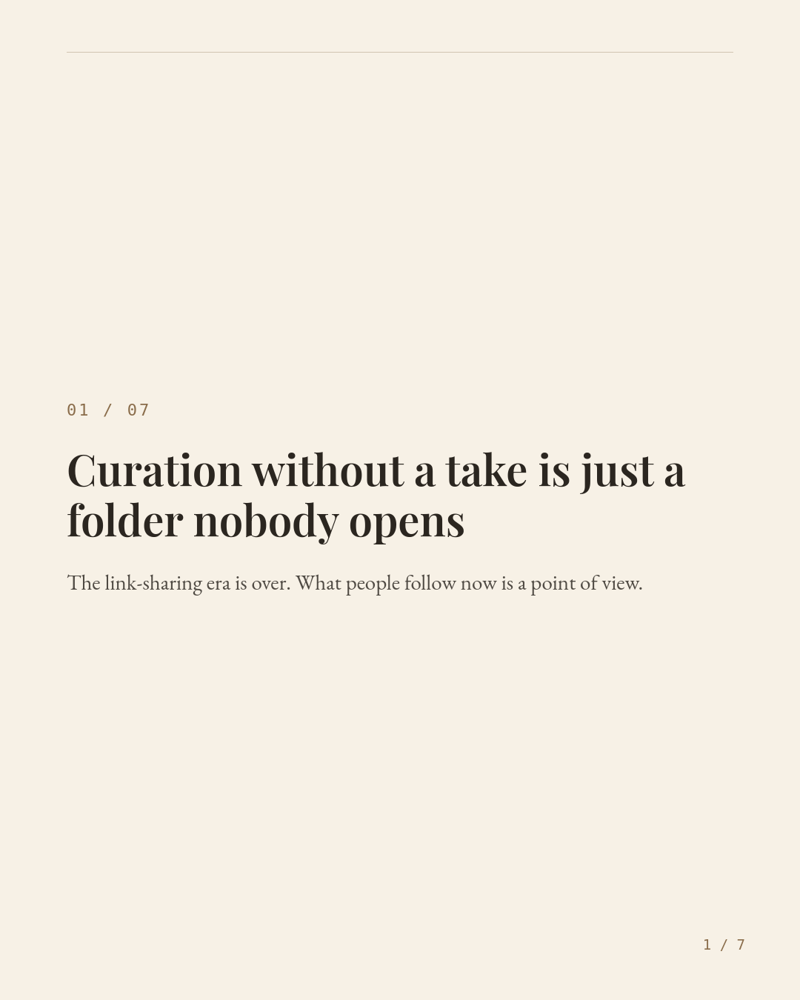
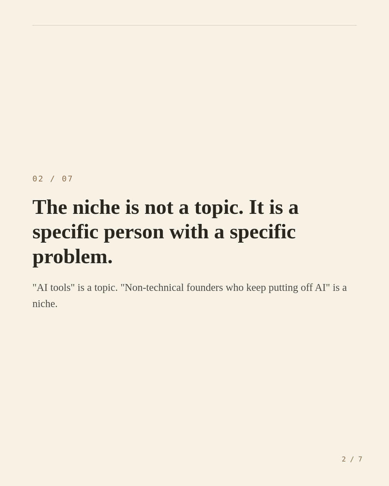
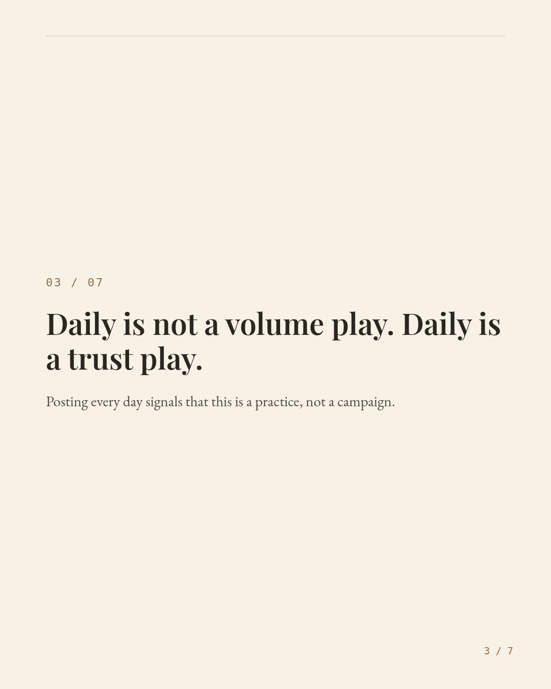
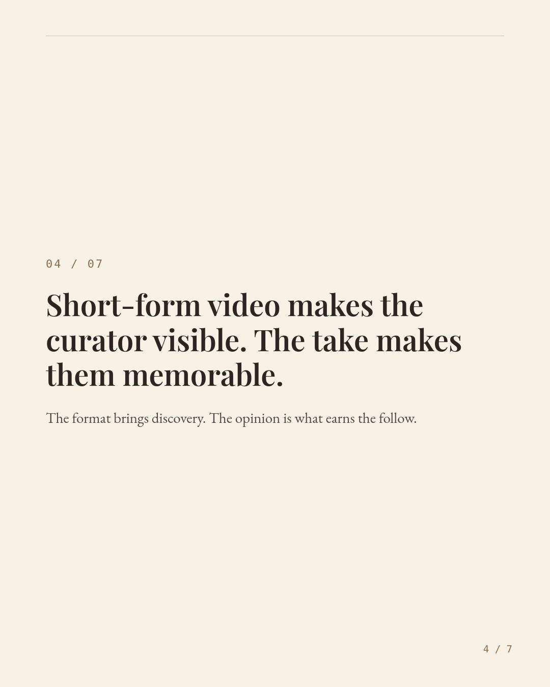
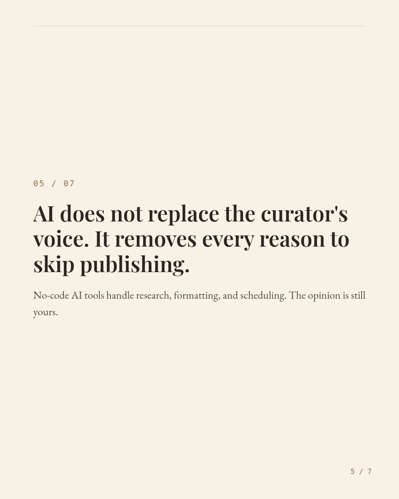
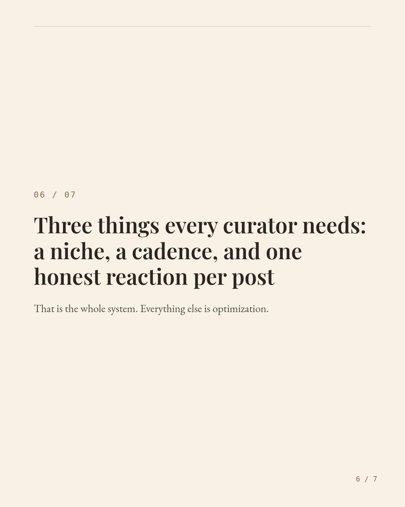
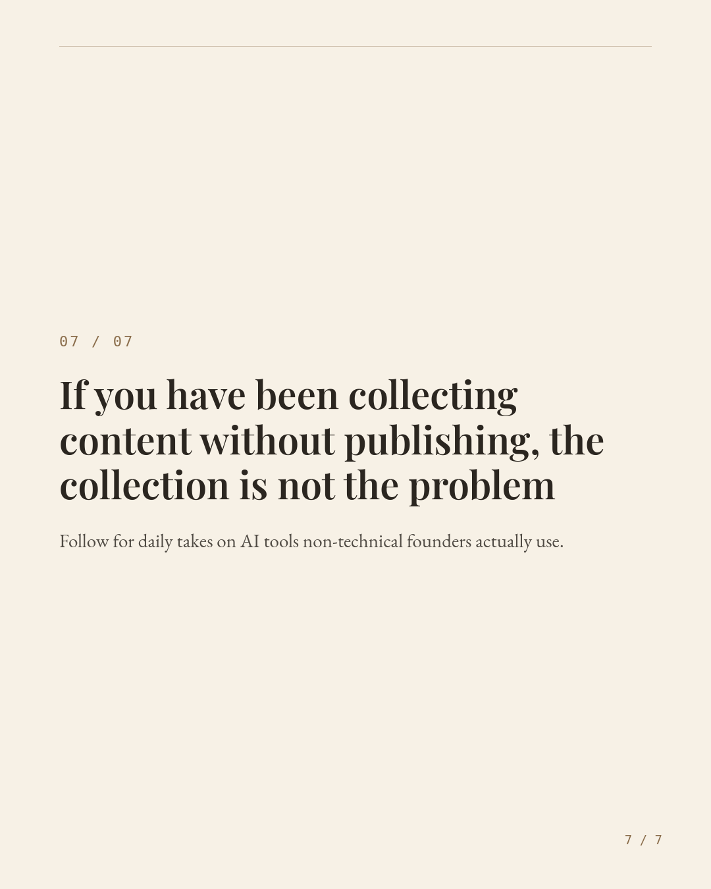

Carousel preview — 7 slides — for approval / layout review, not yet published







The curators who are actually growing right now are not sharing more links than you. They are showing up every day to a specific niche with one honest take. That is it.
Most non-technical business owners stall because the workflow feels complicated. It is not. No-code AI tools already exist to handle the research, the formatting, and the scheduling. You bring the opinion. The tools clear the path.
Here is the full system in three parts: a niche defined by a specific person with a specific problem, a daily cadence that signals trust rather than hustle, and one genuine reaction per post that makes someone feel like they found the right account.
If you have been collecting content without publishing it, the collection was never the problem.
Save this for the next time you convince yourself you need more preparation before you start.
Want a change made? Describe it below and it'll be edited and re-rendered in place — no need to go back to Generate Assets.
Direct HTML/CSS edit, one slide at a time — the preview updates as you type. Render commits it as that slide's image (this only changes the picture, not the stored slide text — a future Generate/Refine still uses the built-in design).